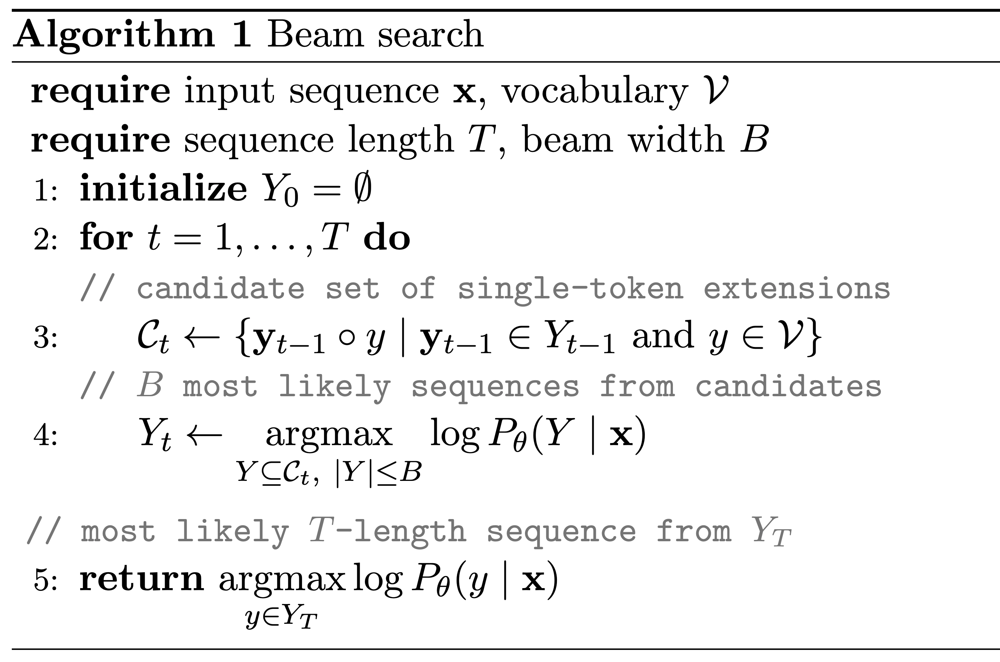

Beam Search Description

Description.
Beam search is a pruned breadth-first search algorithm.
At each step $t$, beam search constructs a candidate set $\mathcal{C}_t$ consisting of all combinations of length $t-1$ sequences from the previous hypothesis set $Y_{t-1}$ and a single new token $y$ from vocabulary $\mathcal{V}$.
The $B$ ("beam width") most likely sequences from the candidate set define the updated hypothesis set $Y_t$.
Following the presentation in
Meister et al., 2020, we have overloaded $\log P_\theta(\cdot \mid \mathbf{x})$ to define the likelihood of a set of sequences in addition to that of a single sequence: $\log P_\theta(Y \mid \mathbf{x}) = \sum_{\mathbf{y} \in Y} \log P_\theta(\mathbf{y} \mid \mathbf{x})$.
We use a
beam width of $\mathbf{B=256}$. The size of the
vocabulary $\mathbf{\mathcal{V}}$ is 100, corresponding to the number of bins used in the
discretization procedure.$^1$
Planning with beam search.
Algorithm 1 is presented in an abstracted form so as to apply to a generic sequence generation problem.
To use beam search for control, we use the last $c$ transitions (the "context size") of the current trajectory as input.
We use a
context size of $\mathbf{c=5}$.
The algorithm is also written in a way that abstracts away concerns relating to speed or GPU memory.
In practice, when evaluating the likelihood of a sequence $\log P_\theta(\mathbf{y} \mid \mathbf{x})$, only the final $c \cdot (N + M + 2)$ tokens (accounting for $N$-dim states, $M$-dim actions, and scalar rewards and rewards-to-go) of the sequence are passed as input to the model $P_\theta$.
We use a
planning horizon of $10$ transitions, corresponding to a generated sequence length of $10 \cdot (N + M + 2)$ tokens.
For example, for the Hopper benchmark, $T = 10 \cdot (11 + 3 + 2) = 160$.
$^1$Because the beam width is larger than the context size, at $t=1$ of Algorithm 1 we can consider all possible tokens in the hypothesis set $Y_1$. At $t=2$, when there are $100^2$ options, we must begin pruning. This is reflected by allowing the size of the hypothesis set to be less than the beam width in line 4: $| Y | \le B$.